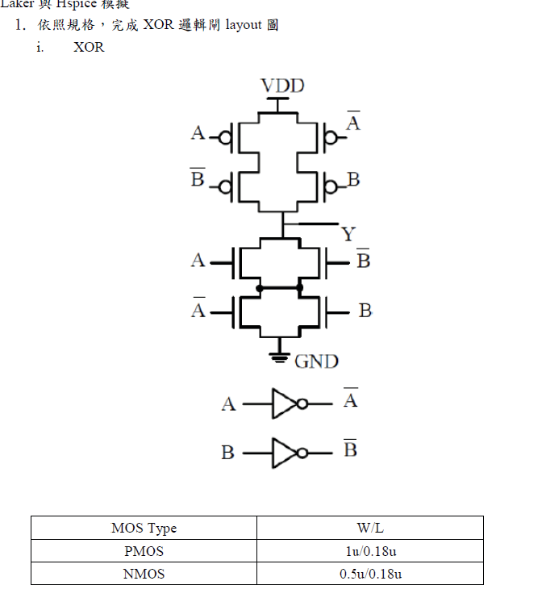

本頁整理剛才的問題、判斷結果、錯誤可能來源、建議修改版本，以及之後做 Layout / LVS 時應注意的地方。

上圖左／上方是 xor.spi 產生的 schematic 表示；下方是作業要求的 XOR transistor 架構。兩者外觀不同，但邏輯可以是等效的。
| 項目 | 你的圖 | 作業要求圖 | 判斷 |
|---|---|---|---|
| 輸入反相器 | XinvA、XinvB 產生 A'、B' | 題目下方也有 A、B 的 inverter | 符合 |
| XOR 主體 | 顯示成 OAI(22) | 顯示成 transistor 串並聯 | 等效顯示不同 |
| PMOS / NMOS 尺寸 | PMOS 1u/0.18u，NMOS 0.5u/0.18u | PMOS 1u/0.18u，NMOS 0.5u/0.18u | 符合 |
| 可能風險 | OUT / NA / NB / net_n1 名稱不直觀 | 題目用 Y、A'、B' | 建議修改命名 |
原本程式的核心大致是：
.subckt xor A B OUT VDD GND
XinvA A NA VDD GND inv
XinvB B NB VDD GND inv
MP1 net_p1 A VDD VDD p_18 W=1u L=0.18u
MP2 net_p2 NA VDD VDD p_18 W=1u L=0.18u
MP3 OUT NB net_p1 VDD p_18 W=1u L=0.18u
MP4 OUT B net_p2 VDD p_18 W=1u L=0.18u
MN1 OUT A net_n1 GND n_18 W=0.5u L=0.18u
MN2 OUT NB net_n1 GND n_18 W=0.5u L=0.18u
MN3 net_n1 NA GND GND n_18 W=0.5u L=0.18u
MN4 net_n1 B GND GND n_18 W=0.5u L=0.18u
.ends xor這個版本把節點名稱改成更接近作業圖，方便你看 schematic、畫 layout、跑 LVS。
*** inverter ***
.subckt inv in out VDD GND
Mp_inv out in VDD VDD p_18 W=1u L=0.18u
Mn_inv out in GND GND n_18 W=0.5u L=0.18u
.ends inv
*** XOR ***
.subckt xor A B Y VDD GND
* Generate A' and B'
XinvA A ABAR VDD GND inv
XinvB B BBAR VDD GND inv
* PMOS pull-up network
* Branch 1: VDD -- A -- p_mid1 -- B' -- Y
MP1 p_mid1 A VDD VDD p_18 W=1u L=0.18u
MP2 Y BBAR p_mid1 VDD p_18 W=1u L=0.18u
* Branch 2: VDD -- A' -- p_mid2 -- B -- Y
MP3 p_mid2 ABAR VDD VDD p_18 W=1u L=0.18u
MP4 Y B p_mid2 VDD p_18 W=1u L=0.18u
* NMOS pull-down network
* Upper parallel group: Y -- (A or B') -- n_mid
MN1 Y A n_mid GND n_18 W=0.5u L=0.18u
MN2 Y BBAR n_mid GND n_18 W=0.5u L=0.18u
* Lower parallel group: n_mid -- (A' or B) -- GND
MN3 n_mid ABAR GND GND n_18 W=0.5u L=0.18u
MN4 n_mid B GND GND n_18 W=0.5u L=0.18u
.ends xor| 原本名稱 | 建議名稱 | 意思 | 為什麼要改 |
|---|---|---|---|
| OUT | Y | XOR 輸出 | 與作業圖一致 |
| NA | ABAR | A 的反相信號 A' | 比較清楚，不會誤認為一般內部節點 |
| NB | BBAR | B 的反相信號 B' | 比較清楚，不會誤認為一般內部節點 |
| net_n1 | n_mid | NMOS 上下 parallel group 的中間節點 | 方便 layout 對應 diffusion / metal 連接 |
| net_p1 / net_p2 | p_mid1 / p_mid2 | PMOS 串聯分支中間節點 | 方便確認兩條 pull-up branch |
本次檢查 xor.spi 時，發現由 SPICE 產生的 schematic 圖形與作業提供的 transistor-level XOR 圖看起來不同。經分析後，主要原因並非 XOR 功能錯誤，而是工具將 transistor-level 的 XOR 主體自動辨識並整理為 OAI(22) compound gate 的符號表示，因此在視覺上與作業圖不完全相同。作業要求的 XOR 結構包含兩個 inverter 產生 A' 與 B'，再由 PMOS pull-up network 與 NMOS pull-down network 組成 XOR 主體。原本的 xor.spi 在邏輯上仍符合此架構，但節點命名如 NA、NB、OUT、net_n1 較不直觀，容易造成 layout 繪製與 LVS 驗證時的對應混淆。因此修改時建議將 NA 改為 ABAR、NB 改為 BBAR，並將輸出節點統一命名為 Y，使 SPICE、schematic 與 layout 的 pin 名稱一致。如此可降低 LVS mismatch 的機率，也更容易檢查 PMOS 與 NMOS 的串並聯結構是否符合題目要求。